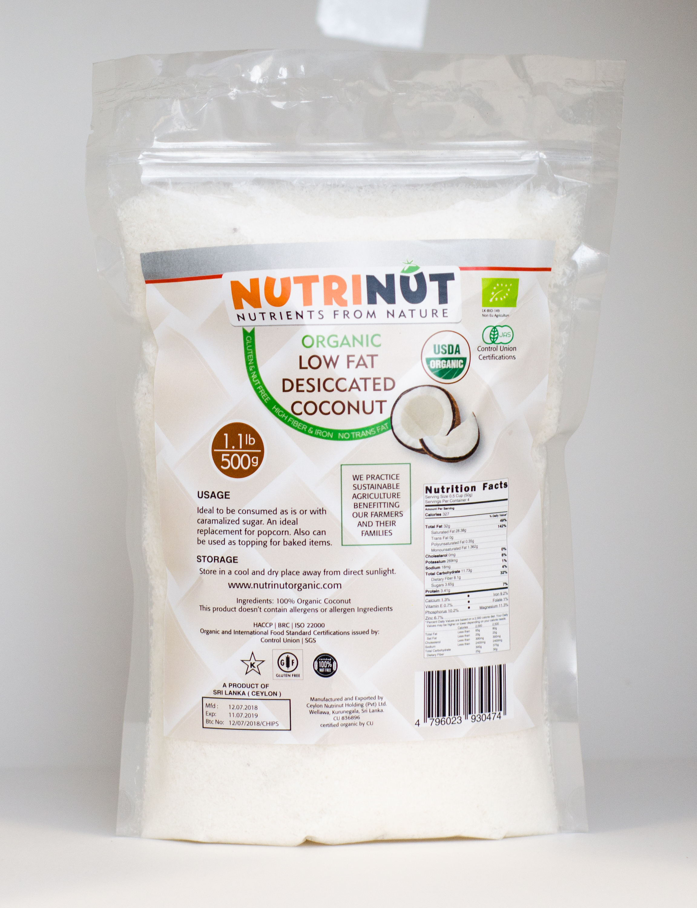

NutriNut Organic Low Fat Dessicated Coconut Oil
Your daily essential for healthy cooking and living.
Available Sizes
Description
NutriNut Organic low-fat desiccated coconut is finely grated, dried coconut that has had most of its oil pressed out before drying. It has a light texture and pure coconut taste without the heavy fats.
Key Benefits
- Lighter & Lower Calorie: Since most of the oil is removed, it's a great choice for managing fat intake.
- Supports Digestion: It's very high in fiber, which helps you feel full longer and promotes good gut health.
- Clean & Natural: Being organic means it’s grown without synthetic pesticides, herbicides, or GMOs.
- Concentrated Flavor:Adds a pure coconut taste and a light, chewy texture to foods like cereals, yogurt, or baked goods.